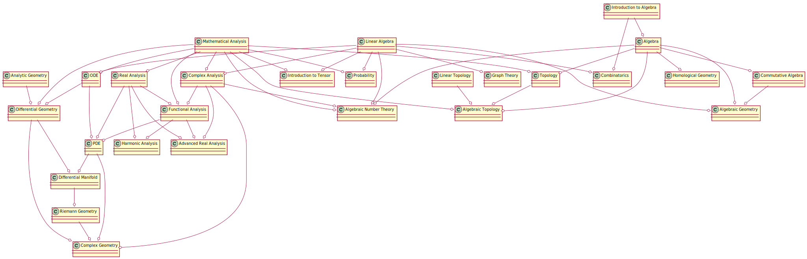

Navigator
Courses Dependency

Introduction to Some Courses
The following two courses are list in the curriculum.
Foundations of Algebraic Geometry
中文名称： 代数几何 英文名称： Foundations of Algebraic Geometry
课程编号： MA05130 学科类别： MA数学 课程范畴： 研究生课 学 分： 4.0
开课学期： 开课单位： 数学科学学院 面向年级： 面向院系：
总学时： 80 周学时： 实验学时： 实践学时：
非选年级： 一年级、二年级 非选院系： 评分制： 百分制 课程层次： 硕士层次
对学生的要求： 数学学科研究生 预修课程：线性代数、近世代数、交换代数
教学方式：
参考教材： Alqebraic Curves, - An Antroduction to Algebraic Geometry, New york, Benjamin,1969.
教 材：
课程简介： 本课程讲述现代代数几何的基础。包括代数簇，Hilbert 零点定理，坐标环，代数簇的局部环，Bezout定理，Noether定理，有理映射，奇点消解，Riemann-Roch定理等
Introduction to Algebraic Geometry
中文名称： 代数几何引论 英文名称： Introduction to Algebraic Geometry
课程编号： MA04411 学科类别： MA数学 课程范畴： 研究生课 学 分： 4.0
开课学期： 开课单位： 数学科学学院 面向年级： 面向院系：
总学时： 80 周学时： 2 实验学时： 实践学时：
非选年级： 非选院系： 评分制： 百分制 课程层次： 硕士层次
对学生的要求： 授课对象：数学专业高年级本科生、研究生 预修课程：线性代数、近世代数、交换代数
教学方式： 考核方式：闭卷
参考教材：
教 材：
课程简介： 本课程讲述现代代数几何的基础，包括代数簇，Hilbert 零点定理，坐标环，代数簇的局部环，Bezout定理，Noether定理，有理映射，奇点消解，Riemann-Roch定理等。
英文简介： The course ‘Introduction to Algebraic geometry’ aims towards advanced undergraduates and graduates majored in Algebraic geometry, which serves as a first course in the field of Algebraic Geometry. Though studying various local and global properties of plane curves, we introduce the basic notions and basic methods in the study of algebraic varieties in general. Meanwhile, we also bring the students some basic algorithms in the field of computational algebraic geometry, by which the students can learn algebraic operations through experiments.